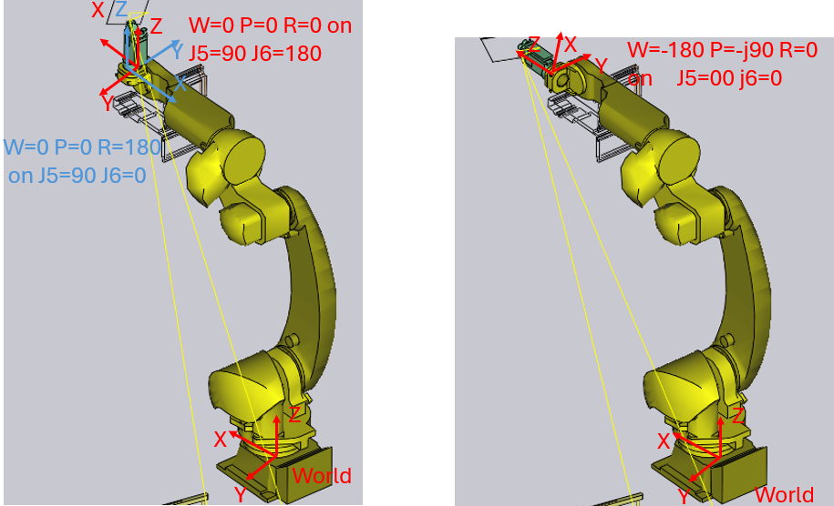
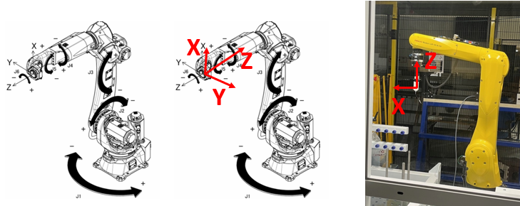
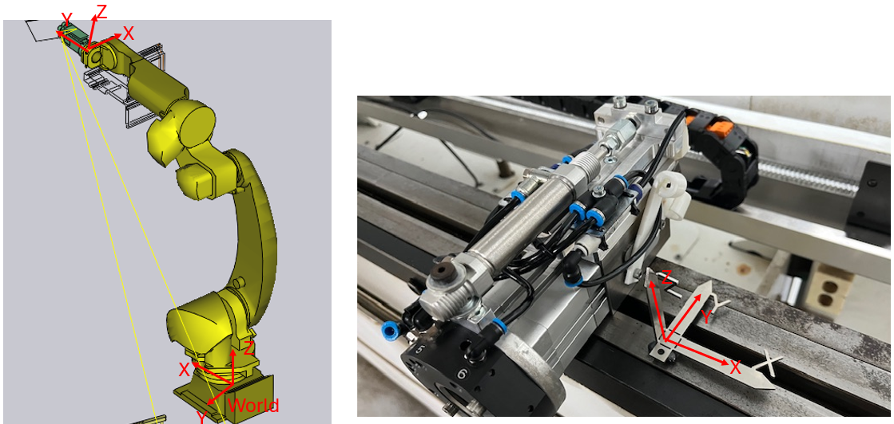
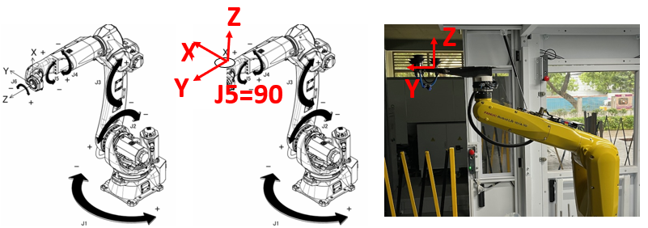
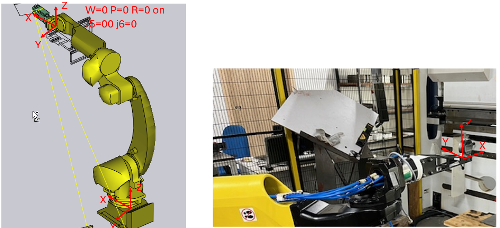

Tool frames
No frame applied
With user and tool frame set to zero the Robot has the following coordinate orientations in the following positions:

Turning the tool in the horizontal position (J5=0) creates the pose W=-180 p=-90 R=0
TF1: Straight Pointer [0 180 180]
Common practise is that the tool should pull away with Z+. In the Pickup position the robot moves according the robot coordinates. Tool frame 1 is set to [0 180 180]

TF2: Pinch Gripper
When we work with the pinch gripper we want while bending the machine coordinate system on the gripper. To turn back the Tool coordinate system into the world coordinate system we need a ToolFrame1 = [0 0 166 90 0 90]; The coordinate system of the pinch gripper after rotation
-
Pinch Gripper for 25kg [90 0 90]
-
Pinch Gripper for FlexCell[90 0 90]

TF3: Vacuum Gripper
When we work with the Vacuum gripper we want while bending the machine coordinate system on the gripper.
-
Vacuum Gripper for 25kg [180 0 180]
-
Vacuum Gripper for FlexCell[0 0 90]

TF4: Measurement gauge [0 -90 180]
The horizontal gauge has a simple transformation when the x direction is kept in the world X direction: J5=00 j6=0 create W=0 P=0 R=0
